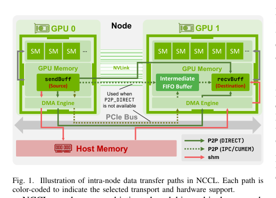
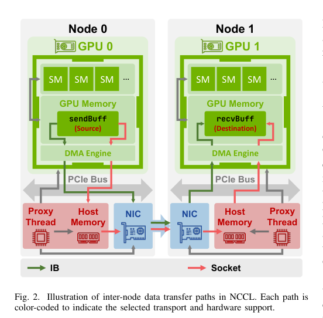
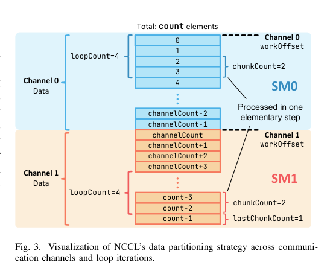
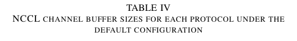
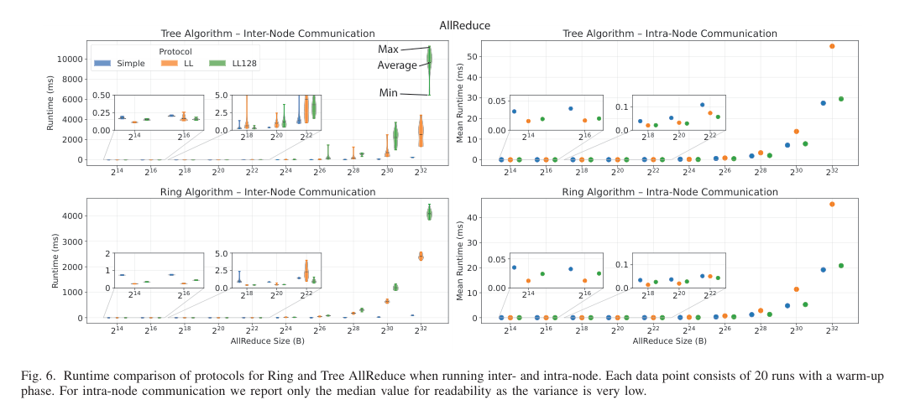
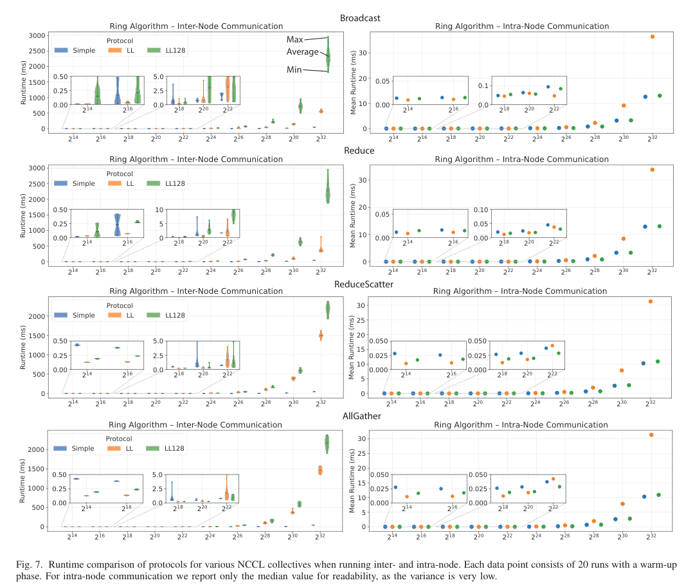

本报告由大模型自动生成，可能存在理解、归纳或数据转述错误；请以原论文为准。 Demystifying NCCL: An In-Depth Analysis of GPU Communication Protocols and AlgorithmsZhiyi Hu, Siyuan Shen, Tommaso Bonato, Sylvain Jeaugey, Cedell A. Alexander, Eric Spada, James Dinan, Jeff R. Hammond, Torsten Hoefler · IEEE Symposium on High-Performance Interconnects (HOTI) · 2025 · 原文 · PDF 报告模型：gemini-3.1-pro-preview / high 这是一篇针对《Demystifying NCCL: An In-depth Analysis of GPU Communication Protocols and Algorithms》（揭秘 NCCL：GPU 通信协议与算法的深度分析）的详细解读。当前日期为 2026 年 11 月 16 日。 为了便于理解本文，首先需要建立一个背景补充：现代分布式 AI 训练依赖由数千张 GPU 组成的集群。在这个系统层级中，单张 GPU 内部包含多个流式多处理器（SM，负责计算）；同一计算节点（Node）内的多张 GPU 通过高速总线（如 NVIDIA 专有的 NVLink 或通用的 PCIe）互联；而不同节点之间，则通过网络接口卡（NIC）连接到外部的高速网络（如 InfiniBand 或以太网 RoCE）。在这个复杂的异构体系中，如何将一块 GPU 内存中的张量数据高效、正确地同步到其他所有 GPU 中，是分布式训练的核心瓶颈。NVIDIA 推出的集合通信库 NCCL（NVIDIA Collective Communication Library）正是解决这一问题的软件中间件。本文针对的是软件系统架构层，重点剖析 NCCL 如何根据底层的硬件约束（如 PCIe 异步写入特性、网卡 FIFO 队列深度、原子操作的粒度限制）来设计其数据流动流水线和通信协议。（注：本文重点关注软件库设计与网络/GPU 硬件特性的交互，并未涉及芯片微架构定义与电子设计自动化（EDA）之间的跨层协同模型，因此不包含 Arch-EDA 协同的内容。） 以下是按论文逻辑展开的详细解析。 一、 引言与 NCCL 架构概览 (Introduction & NCCL Overview)问题背景： 高效的 GPU 间通信是分布式 AI 和高性能计算（HPC）的基础。尽管 NCCL 是当前最主流的 GPU 集合通信开源库，且提供了详细的应用程序接口（API），但其内部的设计机制（如拓扑构建、协议选择、流水线和缓冲区管理）对外界而言很大程度上是一个“黑盒”。这种透明度的缺乏，使得系统研究人员、网络架构师在面对新硬件或超大规模集群时，难以准确预测性能或定位瓶颈。因此，作者通过逆向分析 NCCL（基于 2.19.1 版本）的源码，详细拆解了其内部工作原理，旨在为后续的性能建模和网络仿真提供理论依据。 内容与核心大意： 文章首先梳理了 NCCL 向用户暴露的抽象 API 以及其内部管理并发任务的软件架构。在 API 层面，NCCL 引入了**通信子（Communicator）**的概念。通信子是一个逻辑对象，包含了一组参与通信的 GPU 集合，每个 GPU 在该通信子中被分配一个唯一的无量纲整数标识符，称为 rank（范围从 到 ，其中无量纲变量 为参与的 GPU 总数）。NCCL 提供了五种标准的集合通信操作（如 AllReduce 归约、Broadcast 广播等），以及用于点对点通信和聚合发射的函数。 在启动策略上，用户可以选择为每张 GPU 分配一个独立的 CPU 进程（有利于非统一内存访问 NUMA 架构下的数据局部性）、在一个 CPU 进程中使用多个线程管理多张 GPU（便于通过共享内存直接访问数据），或者退化为单线程管理多张 GPU。 本文最核心的一个抽象概念是通信通道（Communication Channels）。为什么需要通道？如果 NCCL 把整个数据块交给单个 GPU SM 或单个网卡去传输，往往无法打满 NVLink 或 InfiniBand 的极高物理带宽。为了解决这个问题，NCCL 在软件层面将一个大的集合通信任务划分为多个并行的通信通道。在底层映射上，每一个通道对应 CUDA 启动时的一个独立的线程块（Block），运行在 GPU 的一个专属 SM 上，操作输入缓冲区中互不重叠的数据块。通过使用多个通道，NCCL 既能利用 GPU 侧的多个 SM 实现细粒度并行，又能通过不同的网卡将数据发出，实现网络侧的负载均衡。然而，通道数并非越多越好：当通道过多时，分配给每个通道的数据块会变小，如果小于网卡底层的 512 KiB 先入先出（FIFO）缓冲区大小，就会导致 PCIe 和网络带宽利用率下降。因此，NCCL 会根据系统拓扑、消息大小和可用带宽等约束，在运行时通过启发式模型动态决定开启的通道数量。 二、 通信协议的设计权衡 (Communication Protocols)问题背景： 在不同的消息大小和底层硬件链路上，数据同步的开销来源是不同的。对于巨大的数据块，主要的追求是“带宽利用率”；而对于极小的数据块，主要的痛点是“同步延迟”。为了适应这种跨度，NCCL 设计了三种不同的通信协议来搬运数据。 内容与核心大意： 文章详细分析了 Simple、LL（Low Latency）和 LL128 三种协议，它们的核心区别在于“同步机制”和“有效载荷大小”（如表 1 所示，Table I 总结了这三种协议的特征）。
三、 数据传输方法与传输层 (Data-Transfer Methods and Transport Layer)问题背景： 明确了协议（怎么对话）之后，还需要解决数据通过什么物理介质流动的问题。单节点内的 GPU 互联（节点内）和跨节点的 GPU 互联（节点间）面临着完全不同的硬件能力和系统约束。 内容与核心大意： 文章分别解析了 NCCL 的节点内和节点间传输策略（对应图 1 和 图 2 的路径图）。   节点内传输（Intra-node）：
NCCL 高度依赖 NVIDIA 的 GPUDirect P2P（点对点）技术。当 GPU 之间有 NVLink 时，优先走 NVLink；若没有，则走 PCIe 总线。文章指出，当通信发生在同一个 CPU 进程内的两张 GPU 时，NCCL 会应用一种名为 节点间传输（Inter-node）： 跨节点通信由运行在 CPU 上的代理线程（Proxy thread）协调网卡（NIC）完成。如果没有高级网卡，只能退化为 Socket（TCP）协议，数据需要从 GPU 拷贝到 CPU 内存再交由网卡发出。 对于支持 RDMA 的高性能网络（如 InfiniBand 或 RoCE），NCCL 引入了多项深度优化：
四、 集合通信算法与迭代流水线 (Collective Algorithms)问题背景： 拥有了底层的传输通道和协议后，NCCL 需要将宏观的集合操作（如把数据从节点 A 广播到所有节点）转化为微观上多张 GPU 之间协调一致的收发动作。这就需要拓扑算法（Ring 或 Tree）以及一套能让硬件跑满的流水线调度机制。 内容与核心大意：
文章首先解析了 NCCL 执行任何集合算法的“分块流水线”模型（详见图 3）。
作者定义了一系列核心变量来描述这个模型：用户输入的数据总量定义为无量纲的整数变量 （单位称为 element 元素，对于拷贝操作是 1 字节，对于归约计算操作则是具体的数据类型如 float）。NCCL 首先将 平均分配给系统决定的无量纲变量 （表示通道数）个通道。每个通道负责处理大小为 （无量纲，表示数据段大小，单位为 element）的连续数据段，起始偏移量为 （均为无量纲整数）。
如果分配给通道的 超过了该通道在显存中预先分配的缓冲区容量（例如 Simple 协议默认为 4 MiB，见表 4 Table IV），NCCL 就会将任务在时间上拆分为无量纲变量 （表示循环次数）次外部循环。在单次循环内部，缓冲区被进一步切分为多个槽位（slots）（通常由软件参数   在 CUDA 层级的映射上，NCCL 发射一个网格尺寸为 随后，文章对不同算法进行了定性分析（由于实际运行受节点分布影响极大，作者刻意放弃了脱离实际的纯理论时间复杂度公式推导），将其分为两类：
五、 基准测试与应用 (Evaluation & Integration)问题背景与实验设置： 为了验证上述协议在真实环境中的表现，作者在 CSCS 的 Alps 超级计算机（配备 NVIDIA GH200 芯片，16 个节点，采用 150GB/s 节点内互联和 25GB/s RoCE 网络）上进行了基准测试（详见图 6 和附录图 7）。   核心结论：
最终，作者指出，本文所有深度的底层逆向分析结果，都被直接整合到了名为 ATLAHS 的网络仿真工具链中。ATLAHS 通过解析上述 NCCL 的微观依赖图（通道、槽位、原语序列），成功实现了对超大规模大语言模型（LLM）训练集群通信行为的准确预测，误差保持在 5% 以下。 六、 总结与主线串联 (Conclusion & Main Thread)贯穿全文的主线： 这篇文章讲述了一个典型的**“需求驱动逆向工程，再反哺系统设计”**的故事。 面对超大规模分布式 AI 训练的通信瓶颈（最初遇到的问题），学术界和工程界亟需对 GPU 通信进行仿真和优化。但由于 NVIDIA NCCL 是一个高度优化的黑盒库（困难），直接在系统层面上建立模型往往失效。为此，作者像解剖精密钟表一样，一层层拆解了 NCCL：从最底层的网卡/总线硬件约束（如 PCIe 异步写入和 128B 原子能力），推导出了 NCCL 为何要设计 Simple、LL、LL128 三种妥协与特化的通信协议；再由这些协议出发，分析了 NCCL 如何利用 Channel 通道和 Slot 流水线槽位来填补通信延迟；最后通过组合这些流水线，揭示了宏观的 Ring 和 Tree 集合算法的真实运行步态（作者怎么做、为什么这么做）。 最终，这些微观规律被用于构建高精度的 ATLAHS 仿真器，解决了此前仿真工具脱离真实软件库调度逻辑导致预测不准的问题（最终解决的问题）。 关键假设与局限：
|